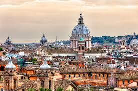

Rome (Italiaans: Roma) is de hoofdstad van Italië en het bestuurlijk centrum van de regio Lazio en de Città Metropolitana di Roma Capitale (voorheen de provincie Rome). De stad heeft ca. 2,8 miljoen inwoners, het inwonertal van de metropoolregio bedraagt 3,7 miljoen. Het is de grootste stad van Italië. Door de stad, gelegen in het midwesten van het Apennijns Schiereiland, stromen de Tiber en de Aniene. Bezienswaardig zijn het Colosseum, het Forum Romanum, het Pantheon, de Sint-Pietersbasiliek, de Trevifontein en het Monument van Victor Emanuel II. Doorheen de geschiedenis van ruim 2700 jaar ontwikkelde de stad zich tot een van de belangrijkste steden van de westerse cultuur. Rome was de hoofdstad van het Romeinse Koninkrijk, de Romeinse Republiek en het Romeinse Keizerrijk. Sinds 1871 is het de hoofdstad van Italië. In de dwergstaat Vaticaanstad, een enclave in de stad, zetelt de paus. Het historisch stadscentrum bevindt zich op de Werelderfgoedlijst van de UNESCO. Rome is oorspronkelijk gebouwd op zeven heuvels en strekt zich inmiddels uit tot aan de Tyrreense Zee.
Wikipedia
